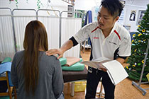
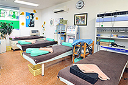
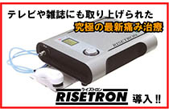

バスケ好きで有名な接骨院といえばこの名古屋市守山区にある「守山こうしん接骨院」だろう。
院長の中村義一郎さん自らもバスケ経験者で今なお練習で汗を流しているとの事。
施術中にも、体の事はもちろん、NBAや普段のバスケの話で意気投合できるに違いないだろう。
守山こうしん接骨院の魅力としては、各部位ごとに最適な治療機器が存在し施術が行われることだ。
肩こり・腰痛にはTV・雑誌等で話題の最新治療器「ライズトロン」。
多数のトップアスリートが愛用する医療機器「syber（サイバー）9000」はスポーツの前後に取り入れることで、ケガの予防やメンテナンスに最適だという。
また様々な腰痛患者に対しての治療機として、浮腰式「プロテック」や、
院長自身のアキレス腱断裂時の救世主となった超音波治療器など、目的や用途に合わせて対応してくれる幅広い世代に頼りにされる接骨院だ。
-

患者一人一人に合った治療法を丁寧に探してくれる。
-

明るい店内には患者の容体に見合う多種多様の医療機器がズラリ。
-
明るい店長はバスケの話が大好き！たくさんお喋りしましょう！
-

話題の治療器ライズトロン。スポーツによる関節捻挫・打撲・肉離れなどにも効果的。
- 接骨院
- 交通事故
- スポーツ障害
SHOP DATA
| 店舗名 | 守山こうしん接骨院（モリヤマコウシンセッコツイン） |
|---|---|
| 住所 | 名古屋市守山区幸心3丁目501番地 |
| TEL | 052-793-2888 |
| 営業時間 | 午前 9:00～12:00 午後16:00～19:30（日曜のみ午前のみ） |
| 定休日 | 水曜日・祝祭日 |
| 料金 |
初診の時 600円～1,300円程度 ２回目以降 300円～500円程度 ※保険適用時の料金です（国民健康保険、社会保険、組合保険、共済保険など） |
| 駐車場 | 有 |
| アクセス | 大曽根、勝川から国道19号で車で約10分！ |
| URL | http://www.moriyamakousin.com/ |